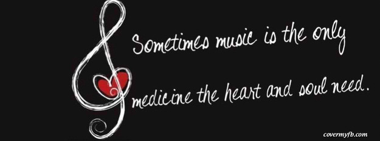
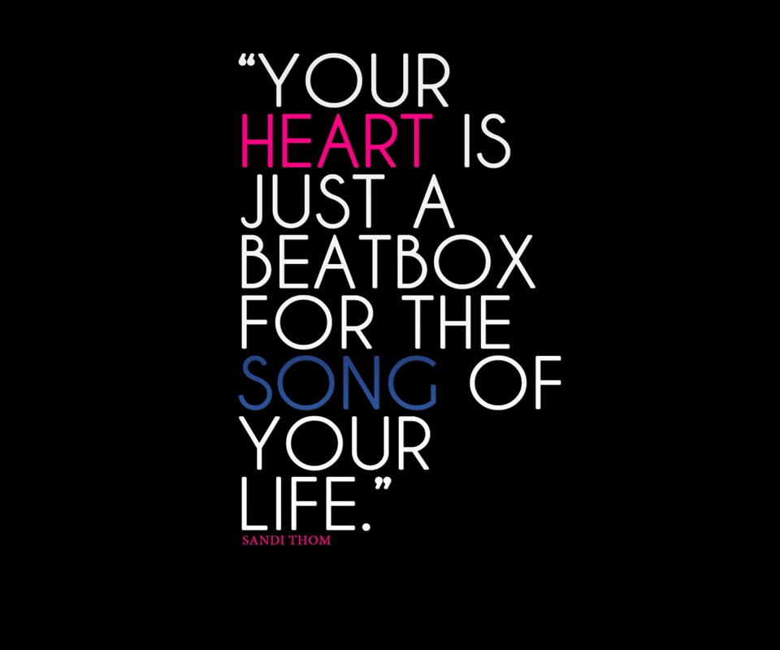

It's almost impossible to find someone who doesn't feel a strong connection to music. Even if you can't carry a tune or play an instrument, you can probably reel off a list of songs that evoke happy memories and raise your spirits. Surgeons have long played their favorite music to relieve stress in the operating room, and extending music to patients has been linked to improved surgical outcomes. In the past few decades, music therapy has played an increasing role in all facets of healing.
What is music therapy?
Music therapy is a burgeoning field. People who become certified music therapists are usually accomplished musicians who have deep knowledge of how music can evoke emotional responses to relax or stimulate people or help them heal. They combine this knowledge with their familiarity with a wide variety of musical styles to find the specific kind that can get you through a challenging physical rehab session or guide you into meditation. And they can find that music in your favorite genre, be it electropop or grand opera. Holly Chartrand, a music therapist at Harvard-affiliated Massachusetts General Hospital, first trained as a vocalist. She decided to become a music therapist when she realized that she could use music to support others just as it had supported her throughout her life. "The favorite part of my job is seeing how big an impact music can have on someone who isn't feeling well," she says. Music therapists know few boundaries. They may play music for you or with you, or even teach you how to play an instrument. On a given day, Chartrand may be toting a tank drum, a ukulele, or an iPad and speakers into a patient's room. "Technology gives us so much access to all kinds of music that I can find and play almost any kind of music you like," she says.
The evidence for music therapy's benefits
A growing body of research attests that music therapy is more than a nice perk. It can improve medical outcomes and quality of life in a variety of ways. Here's a sampling:Easing anxiety and discomfort during procedures.
In controlled clinical trials of people having colonoscopies, cardiac angiography, or knee surgery, those who listened to music before their procedure had less anxiety and less need for sedatives. People who listened to music in the operating room reported less discomfort during their procedure. And those who heard music in the recovery room used less opioid medication for pain.Restoring lost speech.
Music therapy can help people who are recovering from a stroke or traumatic brain injury that has damaged the left-brain region responsible for speech. Because singing ability originates in the right side of the brain, people can work around the injury to the left side of their brain by first singing their thoughts and then gradually dropping the melody. Former U.S. Representative Gabby Giffords used this technique to enable her to testify before a Congressional committee two years after a gunshot wound to her brain destroyed her ability to speak.Reducing side effects of cancer therapy.
Listening to music reduces anxiety associated with chemotherapy and radiotherapy. It can also quell nausea and vomiting for patients receiving chemotherapy.Helping with physical therapy and rehabilitation.
If you exercise to a playlist, you've probably noticed that music helps you stick to your routine. In fact, a 2011 analysis of several studies suggests that music therapy enhances people's physical, psychological, cognitive, and emotional functioning during physical rehabilitation programs.Aiding pain relief.
Music therapy has been tested in a variety of patients, ranging from those with intense short-term pain to those with chronic pain from arthritis. Over all, music therapy decreases pain perception, reduces the amount of pain medication needed, helps relieve depression in pain patients, and gives them a sense of better control over their pain.Improving quality of life for people with dementia.
Because the ability to engage with music remains intact late into the disease process, music therapy can help to evoke memories, reduce agitation, assist communication, and improve physical coordination.Music therapy can calm anxiety, ease pain, and provide a pleasant diversion during chemotherapy or a hospital stay.
 When word fails, music speaks
CONCLUSION
Music affects you in many ways; however, it primarily affects your brain, through which the rest of your body can be affected. Music is an excellent therapeutic tool for the brain, because it activates so many parts of it. Music’s pitch, rhythm, meter and timbre are processed in both the left and right hemispheres of the brain. Listening to music triggers the areas of the brain that have to do with spatial reasoning. Music can even alter the brain if it is studied from a young age. Research shows that musical training in children can improve the activity of important neural systems. In fact, if someone receives a lot of music training before they turn 15 (or go through puberty), there is a chance that they will develop perfect pitch. Certain scientists think that musicians who have had early training use their brains differently than non-musicians.You can't touch music, but music can touch you.It has also been proven that music has a huge effect on your mood. This occurs because of the rhythm and tone that we hear when we listen to music. When we listen to a rhythm, our heart actually begins to synch with it. Tones are also extremely important, since music composed in a major key usually sounds happier and music composed in a minor key normally sounds sadder. Music may cause you to feel joyful, sad, angry, hyped up, relaxed etc. and sometimes you can feel more than one emotion during a song. As research shows, music not only affects what kind of mood we may be in, but we also seem to have a habit of choosing music based on the moods we are already feeling.
Music affects us in many different ways, and provides us with many benefits. The brain can even be improved by listening to music, and so can our mental and physical health. Music can even be used to boost our mood. However, we have to know which type of music is most beneficial for us, as it is normally based on personal preference, even though classical music is usually the most rewarding. This ancient art is also one of the most powerful forms of healing for many different sicknesses. Music is truly amazing!